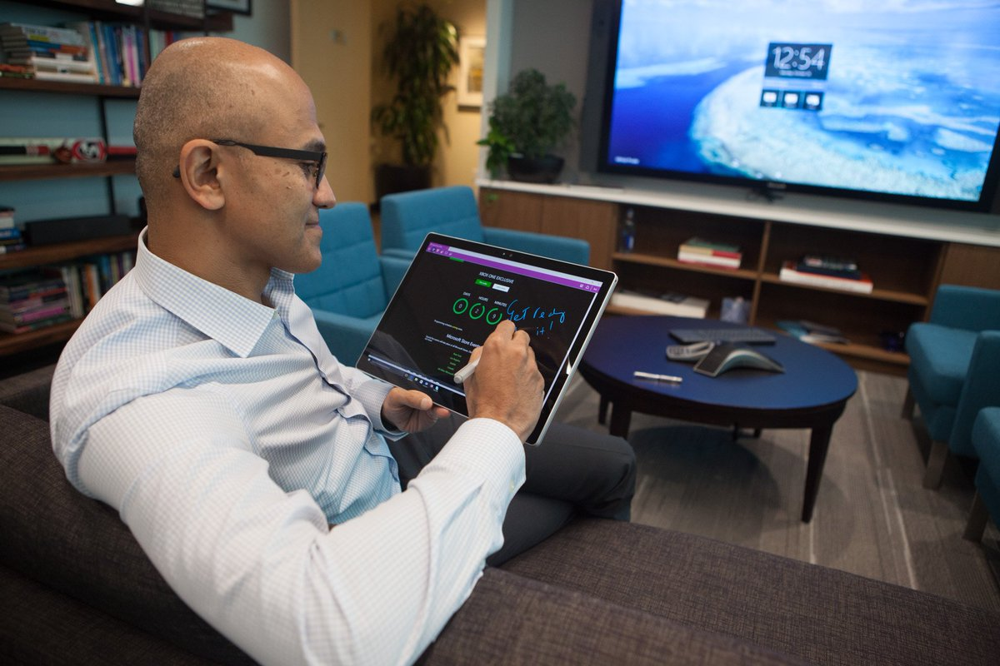

Satya Narayana Nadella is an Indian-American business executive. He is the executive chairman and CEO of Microsoft, succeeding Steve Ballmer in 2014 as CEO and John W. Thompson in 2021 as chairman. Nadella was born in Hyderabad of present-day Telangana, India[7] into a Telugu-speaking Hindu family.[8][9][10] His mother Prabhavati was a lecturer[11] and his father, Bukkapuram Nadella Yugandhar, was an Indian Administrative Service officer of the 1962 batch.[12][13][14] Nadella attended the Hyderabad Public School, Begumpet[15] before receiving a bachelor's in electrical engineering from the Manipal Institute of Technology in Karnataka in 1988.[16][17] Nadella then traveled to the U.S. to study for an M.S. in computer science at the University of Wisconsin–Milwaukee,[18] receiving his degree in 1990.[19] Later, he received an MBA from the University of Chicago Booth School of Business in 1997.[20][21]
